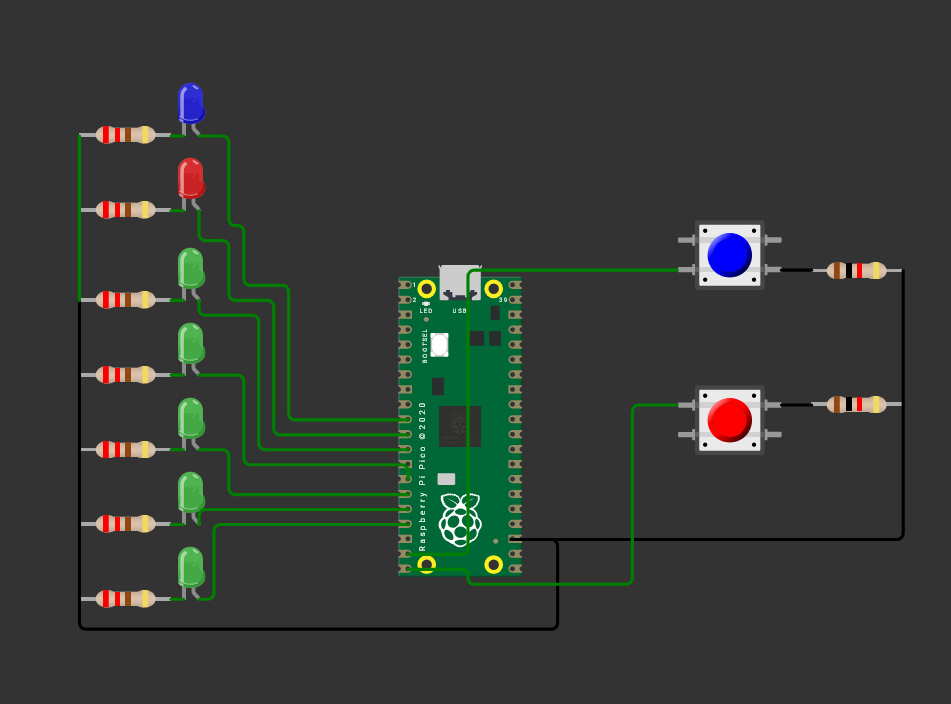

Juego tipo “Pong” con LEDs e interrupciones (Raspberry Pi Pico)
Esta práctica implementa un “Pong” lineal con 5 LEDs. Una “pelota” recorre de izquierda a derecha y viceversa (posiciones 1↔5). Cada jugador tiene un botón: si lo presiona cuando la pelota llega a su extremo, cambia la dirección y “devuelve” el tiro. Si nadie responde y la pelota “sale” por un extremo, se marca punto: se enciende un LED de “anotación” del lado ganador durante 2 s y el juego reinicia desde el centro.
1) Resumen
- Nombre del proyecto: Pong de LEDs con interrupciones
- Equipo / Autor(es): Antonio Martínez
- Curso / Asignatura: Sistemas Embebidos
- Fecha: 01/09/2025
- Descripción breve: Juego de “Pong” unidimensional usando 5 LEDs para la pelota, 2 salidas para puntos y 2 botones con interrupciones para devolver la pelota en los extremos.
Información del proyecto:
Lenguaje/SDK: C con Raspberry Pi Pico SDK (pico/stdlib.h).
Técnicas clave: manejo de GPIO, interrupciones por flanco de bajada, pull-ups internos, lógica de estados.
Plataforma: Raspberry Pi Pico / Pico 2.
Material utilizado
- Raspberry Pi Pico (o Pico 2) + cable micro-USB/USB-C
- Protoboard
- 7 LEDs (5 para “cancha”, 2 para puntos J1/J2)
- 7 resistencias 220–330 Ω (una por LED)
- 2 botones momentáneos
- 2 resistencias 1K-2K Ω para los botones
- Cables de conexión (jumpers)
- PC con VS Code + Pico SDK configurado
2) Objetivos
- Usar interrupciones GPIO para leer botones con pull-up interno (activo en bajo).
- Modelar la lógica de juego con variables de posición (
pos) y dirección (dir). - Indicar estado del juego en hardware: 5 LEDs para pelota, 2 salidas para “punto”.
- Practicar estructura de programa embebido (inicialización–ISR–bucle principal).
3) Conexiones / Esquema
Botones (activos en bajo):
- Un terminal del botón a GND; el otro a GPIO 14 (BTN_AVANZA) y GPIO 15 (BTN_RETRO). Se habilita gpio_pull_up(), por lo que al presionar el botón, la línea cae a 0 (flanco de bajada).
LEDs “cancha” (con resistencia a GND):
- LED4 → GPIO 9
- LED0 → GPIO 10
- LED1 → GPIO 11
- LED2 → GPIO 12
- LED3 → GPIO 13
LEDs de “punto” (o zumbadores, según el montaje):
- J1 → GPIO 7 (punto del jugador izquierdo)
- J2 → GPIO 8 (punto del jugador derecho)
Recomendación: conectar ánodo del LED a GPIO mediante resistencia serie y cátodo a GND. Con
gpio_put(pin, 1)el LED enciende.
Tabla rápida de pines
| Señal | GPIO | Uso |
|---|---|---|
| BTN_AVANZA | 14 | Botón jugador izquierdo |
| BTN_RETRO | 15 | Botón jugador derecho |
| LED4 | 9 | Posición 1 (extremo izq) |
| LED0 | 10 | Posición 2 |
| LED1 | 11 | Posición 3 (centro) |
| LED2 | 12 | Posición 4 |
| LED3 | 13 | Posición 5 (extremo der) |
| J1 | 7 | Indicador de punto izq |
| J2 | 8 | Indicador de punto der |
Diagrama de conexión 
4) Código
#include "pico/stdlib.h"
#include <stdbool.h>
#define BTN_AVANZA 14
#define BTN_RETRO 15
#define LED4 9
#define LED0 10
#define LED1 11
#define LED2 12
#define LED3 13
#define J1 7
#define J2 8
bool Ju1 = false; // estado botón jugador 1
bool Ju2 = false; // estado botón jugador 2
int pos = 1; // posición inicial de la pelota
int dir = 1; // dirección inicial: 1=derecha, -1=izquierda
static void accion(uint gpio, uint32_t events) {
// FIX: habilitaste FALL en main; aquí también revisa FALL y atiende ambos botones
if (events & GPIO_IRQ_EDGE_FALL) {
if (gpio == BTN_AVANZA) { if (pos == 1 /*&& Ju1*/) dir = 1; } // Ju1 opcional
if (gpio == BTN_RETRO) { if (pos == 5 /*&& Ju2*/) dir = -1; } // Ju2 opcional
}
gpio_acknowledge_irq(gpio, events);
}
int main() {
stdio_init_all();
const uint LEDS[5] = { LED4, LED0, LED1, LED2, LED3 }; // 9,10,11,12,13
for (int i = 0; i < 5; i++) { // FIX: antes era < 4
gpio_init(LEDS[i] );
gpio_set_dir(LEDS[i], true);
gpio_put(LEDS[i], 0); // FIX: apaga inicialmente
}
const uint PUNTOS[2] = { J1, J2 };
for (int i = 0; i < 2; i++) {
gpio_init(PUNTOS[i] ); // FIX: inicializa PUNTOS, no LEDS
gpio_set_dir(PUNTOS[i], true); // FIX: salida
gpio_put(PUNTOS[i], 0); // FIX: apaga inicialmente
}
// Botones como entrada con pull-up (activo en bajo)
gpio_init(BTN_AVANZA); gpio_set_dir(BTN_AVANZA, false); gpio_pull_up(BTN_AVANZA);
gpio_init(BTN_RETRO); gpio_set_dir(BTN_RETRO, false); gpio_pull_up(BTN_RETRO);
// IRQ: instalas callback con el primero y habilitas también el segundo
gpio_set_irq_enabled_with_callback(BTN_AVANZA, GPIO_IRQ_EDGE_FALL, true, &accion);
gpio_set_irq_enabled(BTN_RETRO, GPIO_IRQ_EDGE_FALL, true);
while (true) {
// (Opcional) actualizar flags de botones si los quieres usar en otro lado
Ju1 = !gpio_get(BTN_AVANZA);
Ju2 = !gpio_get(BTN_RETRO);
// --- Movimiento automático ---
pos += dir;
// Rebotes en bordes si nadie responde
if (pos == 6) {
for (int i = 0; i < 5; i++) gpio_put(LEDS[i], 1);
gpio_put(J2, 1);
sleep_ms(2000);
gpio_put(J2, 0);
pos = 3;
// (tu lógica original no reubica pos ni dir aquí más allá del if)
}
if (pos == 0) {
for (int i = 0; i < 5; i++) gpio_put(LEDS[i], 1);
gpio_put(J1, 1);
sleep_ms(2000);
gpio_put(J1, 0);
pos = 3;
}
// --- Mostrar LEDs ---
for (int i = 0; i < 5; i++) {
gpio_put(LEDS[i], (i + 1 == pos)); // LEDS[0] ↔ pos=1 ... LEDS[4] ↔ pos=5
}
sleep_ms(250);
}
}
5) Explicación del programa
a) Definiciones y mapeo de pines
- Botones:
BTN_AVANZA=14,BTN_RETRO=15(entradas con pull-up, activos en bajo). - LEDs “cancha”:
LED4=9,LED0=10,LED1=11,LED2=12,LED3=13.
Se agrupan enLEDS[5] = { LED4, LED0, LED1, LED2, LED3 }, dondepos=1corresponde aLEDS[0](GPIO 9) ypos=5aLEDS[4](GPIO 13). - Indicadores de punto:
J1=7(izquierda),J2=8(derecha). Se configuran como salidas y se encienden 2 s al anotar.
b) Variables de estado
pos ∈ {1,2,3,4,5}indica la posición de la pelota.dir ∈ {+1, −1}define la dirección (derecha/izquierda).Ju1,Ju2sirven como flags de lectura (opcionales, el juego funciona sin usarlas).
c) Interrupción accion()
- Se activa con flanco de bajada (
GPIO_IRQ_EDGE_FALL) en cualquiera de los dos botones. - Lógica de “devolución”:
- Si la pelota está en el extremo izquierdo (
pos==1) y cae el botón izquierdo (BTN_AVANZA), se fuerzadir = +1. - Si está en el extremo derecho (
pos==5) y cae el botón derecho (BTN_RETRO), se fuerzadir = −1. - Se llama a
gpio_acknowledge_irq()para limpiar el evento atendido.
d) Inicialización en main()
LEDSyPUNTOSse inicializan como salidas y se apagan.- Botones se configuran como entradas con
gpio_pull_up(). - Se registra la ISR con
gpio_set_irq_enabled_with_callback()enBTN_AVANZAy se habilita también la IRQ deBTN_RETRO.
e) Bucle principal
- (Opcional) Actualiza
Ju1/Ju2leyendo el estado instantáneo de los botones. - Movimiento:
pos += dir; - Punto/anotación si la pelota “sale”:
- Derecha: si
pos==6, se encienden todos los LEDs de cancha, se activaJ2por 2 s y se reiniciapos=3. - Izquierda: si
pos==0, se encienden todos los LEDs de cancha, se activaJ1por 2 s y se reiniciapos=3.
(La direccióndirno se reorienta explícitamente tras el punto.) - Render: se enciende únicamente el LED cuyo índice+1 == pos.
- Velocidad:
sleep_ms(250)define la dificultad.
6) Pruebas y comportamiento esperado
- Arranque: un único LED encendido en la posición 1; la “pelota” avanza hacia la derecha (
dir=+1). - Devolución correcta: al llegar al LED extremo, si el jugador correspondiente presiona a tiempo, la pelota cambia de sentido sin salir.
- Fallo: si nadie presiona y la pelota intenta pasar de
5→6o1→0, se marca punto (J2oJ1, respectivamente) y se reinicia en el centro (pos=3).